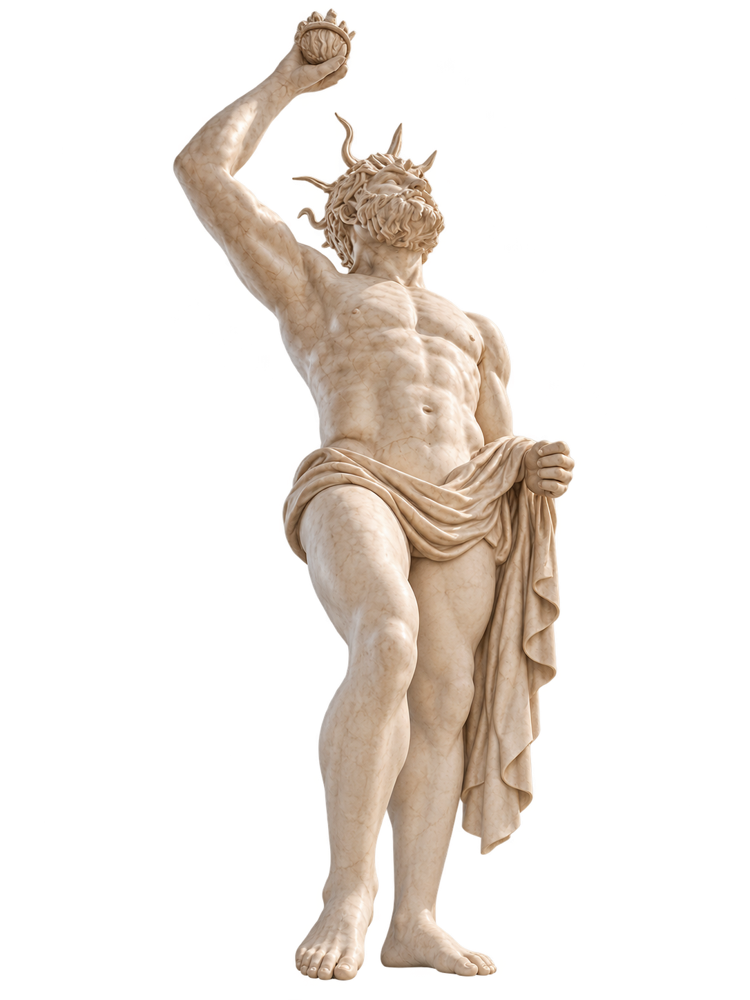
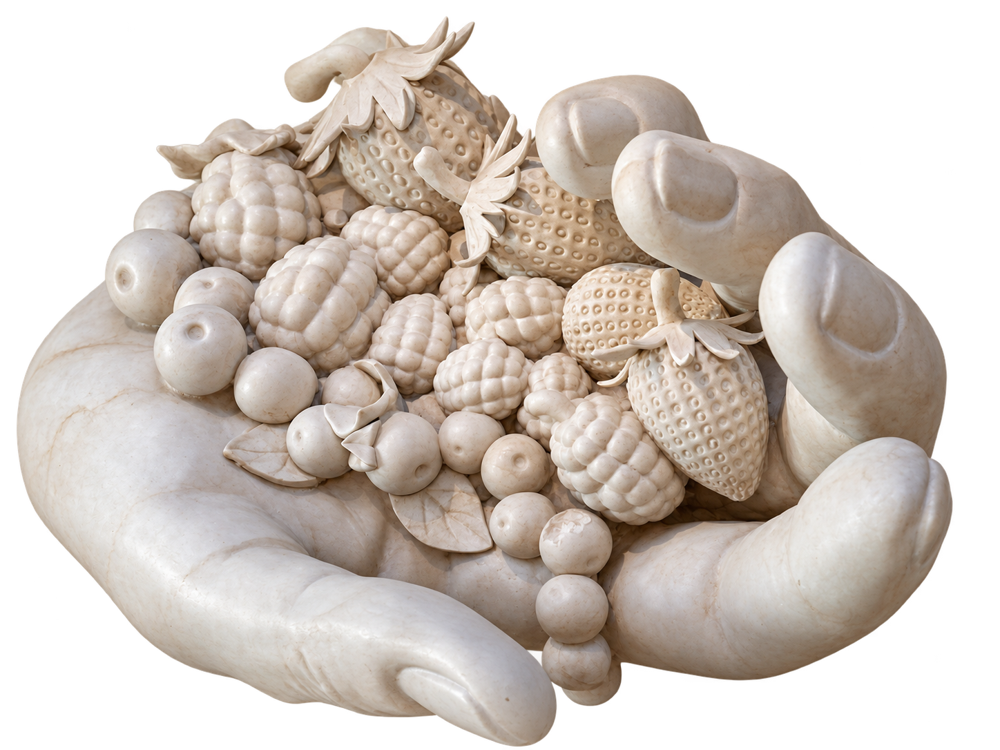
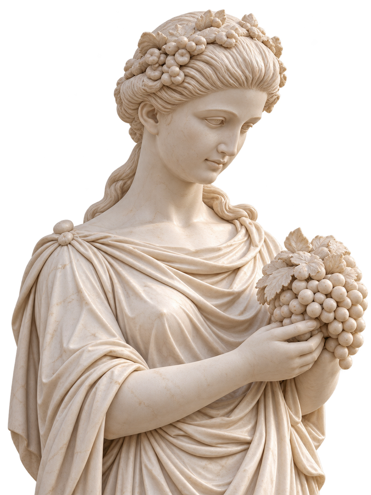
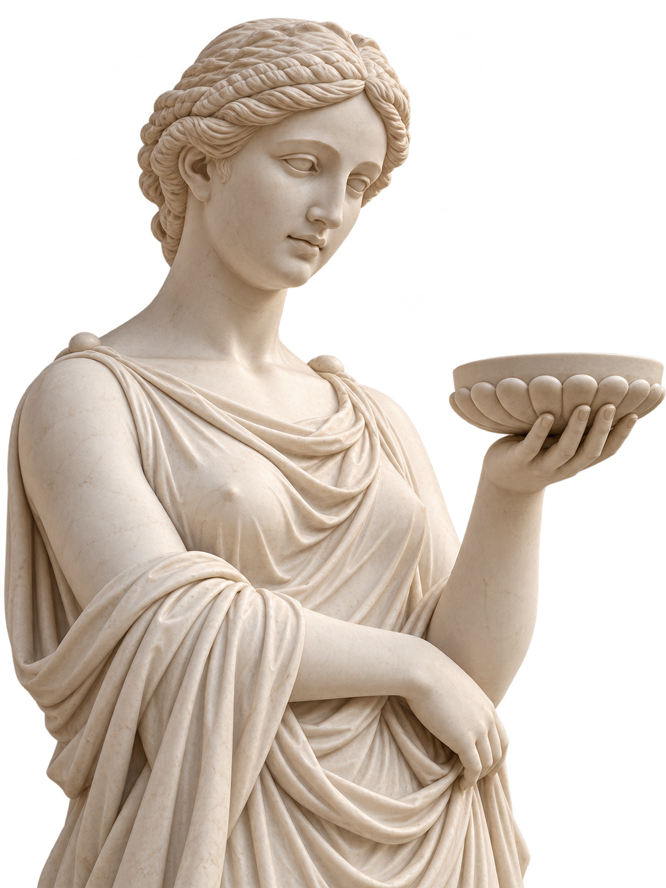

FIGLIO

TRADIZIONE
ARTE
PIACERE
SENZA CONFINI
SCROLL ↓
LA MATERIA PRIMA
ITALIA
ENCUENTRA
A TANDIL
La excelencia italiana se encuentra con nuestra tierra. Ingredientes nobles, tradición y un territorio único dan vida a un gelato con identidad propia.
NUESTROS SABORES ⟶
ARTE QUE SE SABOREA
UNA OBRA
DE ARTE EN
CADA SABOR
Cada creación es un homenaje al arte, a la belleza y al placer de lo simple. Gelato que transforma lo cotidiano en algo extraordinario.
NUESTROS SABORES ⟶
LA LECHE
PUREZA
QUE INSPIRA
La leche, en su forma más pura, es el inicio de todo. Un ingrediente noble que, en manos expertas, se transforma en algo inolvidable.
EXPLORAR SABORES ⟶
TRADICIÓN SIN LÍMITES
TODOS LOS
CAMINOS LLEVAN
AL SABOR
Un legado que viaja, que inspira y que une culturas. Del arte clásico a tu mesa, el placer no conoce fronteras.
DESCUBRIR DOLCEZZE ⟶